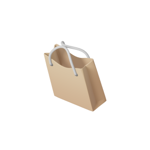
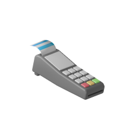
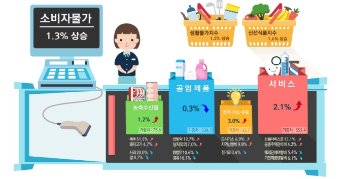
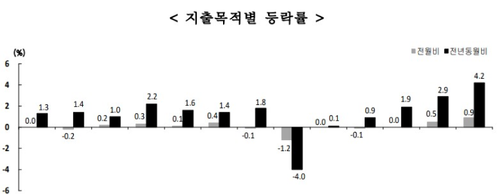
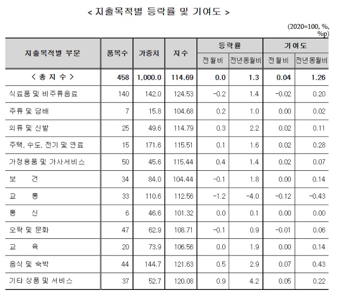
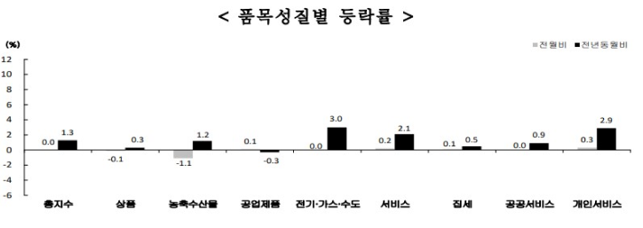
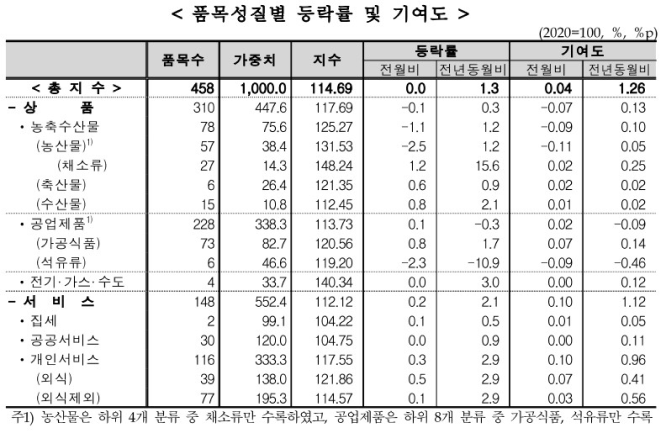

<div class="group-2">
  <div class="group-1">
    <div class="frame-1">
      <div class="div">품목성질별 동향</div>
      <div class="rectangle-71"></div>
      <div class="rectangle-72"></div>
      <div class="rectangle-73"></div>
      
      <div class="shopingin-fly-bucker-cart">
        
      </div>
      <div class="shopingin-isometric-paperbag">
        
      </div>
      <div class="shopingin-isometric-coin">
        
      </div>
      <div class="shopingin-isometric-coin3">
        
      </div>
      <div class="shopingin-fly-cart">
        
      </div>
      <div class="shopingin-fly-credit-machine">
        
      </div>
      
    </div>
    
    <div class="rectangle-48"></div>
    <div class="rectangle-57"></div>
    <div class="rectangle-58"></div>
    <div class="rectangle-49"></div>
    <div class="rectangle-50"></div>
    <div class="rectangle-51"></div>
    <div class="_10-1-3-1-3">
      <span>
        <span class="_10-1-3-1-3-span">
          10월 소비자물가지수는 전월대비 변동 없으며, 전년동월대비 1.3% 상승
          <br />
          <br />
        </span>
        <span class="_10-1-3-1-3-span2">
          -전월비는 농축수산물은 하락하였으나, 전기·가스·수도 변동 없으며,
          서비스, 공업제품이 상승하여 전체 변동 없음
          <br />
          <br />
          -전년동월비는 공업제품은 하락하였으나, 서비스, 전기·가스·수도,
          농축수산물이 상승하여 전체 1.3% 상승
        </span>
      </span>
    </div>
    <div class="_0-2-1-8-0-3-1-7">
      식료품및에너지제외지수는 전월대비 0.2%, 전년동월대비 1.8% 각각 상승
      <br />
      농산물및석유류제외지수는 전월대비 0.3%, 전년동월대비 1.7% 각각 상승
    </div>
    <div class="_0-1-1-2-2-5-0-4">
      <span>
        <span class="_0-1-1-2-2-5-0-4-span">
          생활물가지수는 전월대비 0.1%, 전년동월대비 1.2% 각각 상승
          <br />
        </span>
        <span class="_0-1-1-2-2-5-0-4-span2">
          -전년동월대비 식품은 2.5%, 식품이외는 0.4% 각각 상승
        </span>
      </span>
    </div>
    <div class="_2-5-1-6-15-7-0-2-10-7">
      <span>
        <span class="_2-5-1-6-15-7-0-2-10-7-span">
          신선식품지수는 전월대비 2.5% 하락, 전년동월대비 1.6% 상승
          <br />
        </span>
        <span class="_2-5-1-6-15-7-0-2-10-7-span2">
          -전년동월대비 신선채소 15.7%, 신선어개 0.2% 각각 상승, 신선과실 10.7%
          하락
        </span>
      </span>
    </div>
    <div class="_2024-10">2024년 10월 소비자물가동향(요약)</div>
    <div class="div2">지출목적별 동향</div>
    <div class="div3">
      기타상품및
      <br />
      서비스
    </div>
    <div class="div4">음식및숙박</div>
    
    <div class="div5">총지수</div>
    <div class="div6">
      식료품및
      <br />
      비주류음료
    </div>
    <div class="div7">주류 및 담배</div>
    <div class="div8">의류 및 신발</div>
    <div class="div9">주택, 수도, 전기 및 연료</div>
    <div class="div10">가정용품및 가사서비스</div>
    <div class="div11">보건</div>
    <div class="div12">교통</div>
    <div class="div13">통신</div>
    <div class="div14">오락및문화</div>
    <div class="div15">교육</div>
    
    <div class="_0-1-0-3-1-1-1-2-0-1-0-3-3-0">
      <span>
        <span class="_0-1-0-3-1-1-1-2-0-1-0-3-3-0-span">
          ◦ 상품은 전월대비 0.1% 하락, 전년동월대비 0.3% 상승
          <br />
        </span>
        <span class="_0-1-0-3-1-1-1-2-0-1-0-3-3-0-span2">
          <br />
        </span>
        <span class="_0-1-0-3-1-1-1-2-0-1-0-3-3-0-span3">
          - 농축수산물은 전월대비 1.1% 하락, 전년동월대비 1.2% 상승
          <br />
          <br />
          - 공업제품은 전월대비 0.1% 상승, 전년동월대비 0.3% 하락
          <br />
          <br />
          - 전기‧가스‧수도는 전월대비 변동 없으며, 전년동월대비 3.0% 상승
        </span>
      </span>
    </div>
    <div class="_0-2-2-1-0-1-0-5-0-9-0-3-2-9">
      <span>
        <span class="_0-2-2-1-0-1-0-5-0-9-0-3-2-9-span">
          ◦ 서비스는 전월대비 0.2%, 전년동월대비 2.1% 각각 상승
          <br />
          <br />
        </span>
        <span class="_0-2-2-1-0-1-0-5-0-9-0-3-2-9-span2">
          - 집세는 전월대비 0.1%, 전년동월대비 0.5% 각각 상승
          <br />
          <br />
          - 공공서비스는 전월대비 변동 없으며, 전년동월대비 0.9% 상승
          <br />
          <br />
          - 개인서비스는 전월대비 0.3%, 전년동월대비 2.9% 각각 상승
        </span>
      </span>
    </div>
    <div class="div16">자주 하는 질문</div>
    <div class="rectangle-62"></div>
    <div class="rectangle-63"></div>
    <div class="div17">체감물가를 설명할 수 있는 보조지표는 없나요?</div>
    <div class="div18">정기적으로 지수개편을 하는 이유는 무엇인가요?</div>
    <div class="tv">
      소비자물가는 가구부문 전체의 평균적인 물가변동을 측정하기 위해 TV, 냉장고
      등구입빈도가 낮은 품목과 가사도우미료, 뷰티미용료 등 일부 가구만 구입하는
      품목도 포함하고있습니다.
      <br />
      따라서 일반 가구가 자주 구입하는 품목과 기본생필품 등 일부 품목만을
      대상으로한 생활물가지수 및 전월세포함 생활물가지수, 채소·과실·생선 등을
      대상으로 한 신선식품지수를 보조지표로 공표하고 있습니다.
    </div>
    <div class="div19">
      소비자물가는 대표품목과 가중치를 기준연도 구조로 고정시켜 작성하는
      지수로서, 시간이지나면서 가구의 소비구조가 변화함에 따라 새로운 품목이
      나타나기도 하고 사라지기도하며, 품목간 상대적인 지출액이 달라져
      기준연도로부터 비교시점이 멀어질수록 현실을 보다정확하게 반영하는데 한계가
      생기게 됩니다.
      <br />
      따라서 지수의 현실반영도를 제고하기 위해대표품목을 조정하거나 가중치를
      변경하는 등의 개편작업이 필요합니다.
    </div>
    <div class="rectangle-61"></div>
    <div class="_1-10-000">
      소비자물가는 가구부문 전체의 평균적인 물가변동을 측정하기 위해 기준연도
      가계동향조사 결과에서 항목별 월평균 소비지출액이 전체 월평균 소비지출액의
      1/10,000 이상인 항목으로서, 그 항목에 해당하는 상품군의 가격흐름을 대표할
      수 있고, 시장에서 가격조사를 지속적으로 수행할 수 있는 상품을 선정하고
      있습니다.
    </div>
    <div class="div20">대표품목을 선정하는 기준은 무엇인가요?</div>
    
    <div class="_2024-102">
      2024년 10월
      <br />
      소비자물가동향
    </div>
    
    
    <div class="div21">(전년동월대비)</div>
    <div class="rectangle-39"></div>
    <div
      class="_0-5-0-9-0-1-0-4-0-3-0-2-0-1-0-1-0-2-1-2-2-9-1-6-4-2-1-4-1-8-1-9-2-2-1-4-0-9-1-0-0-1-4-0"
    >
      ◦ 전월대비 음식·숙박(0.5%), 기타 상품·서비스(0.9%),
      주택·수도·전기·연료(0.1%), 가정용품·가사서비스(0.4%), 의류·신발(0.3%),
      주류·담배(0.2%)는 상승, 교육, 통신은 변동 없으며, 보건(-0.1%),
      오락·문화(-0.1%), 식료품·비주류음료(-0.2%), 교통(-1.2%)은 하락
      <br />
      <br />
      ◦ 전년동월대비 음식·숙박(2.9%), 주택·수도·전기·연료(1.6%), 기타상품·
      서비스(4.2%), 식료품·비주류음료(1.4%), 보건(1.8%), 교육(1.9%), 의류·
      신발(2.2%), 가정용품·가사서비스(1.4%), 오락·문화(0.9%), 주류·담배(1.0%),
      통신(0.1%)은 상승, 교통(-4.0%)은 하락
    </div>
    <div class="div22">지출목적별 동향</div>
    <div class="div23">품목성질별 동향</div>
    
    
  </div>
</div>
